Plackett-Burman screening of 6 anti-DDoS parameters for detection accuracy and clean traffic impact
| Factor | Low | High | Unit |
|---|---|---|---|
syn_rate_limit | 1000 | 50000 | pps |
connection_limit | 100 | 10000 | conns/IP |
challenge_mode | off | javascript | |
geo_blocking | off | on | |
anomaly_window_s | 10 | 300 | s |
whitelist_size | 100 | 10000 | IPs |
Fixed: mitigation_provider = in_house, baseline_traffic = 5000_rps
| Response | Direction | Unit |
|---|---|---|
detection_rate | ↑ maximize | % |
false_positive_pct | ↓ minimize | % |
| Feature | Value |
|---|---|
| Design type | plackett_burman |
| Factor types | categorical, continuous |
| Arg style | double-dash |
| Responses | 2 (detection_rate ↑, false_positive_pct ↓) |
| Total runs | 8 |
Generated from actual experiment runs using the DOE Helper Tool.
pareto detection rate
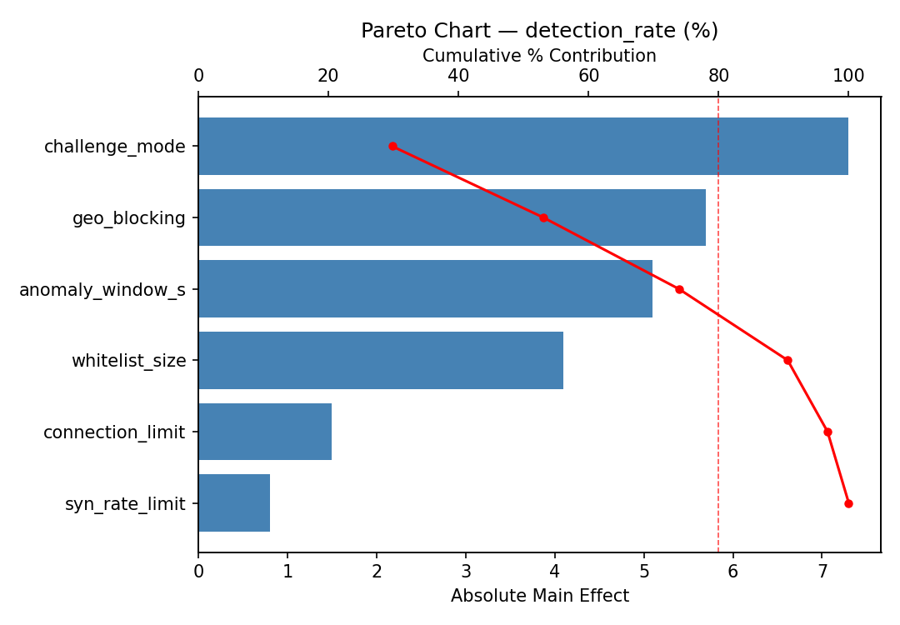
pareto false positive pct
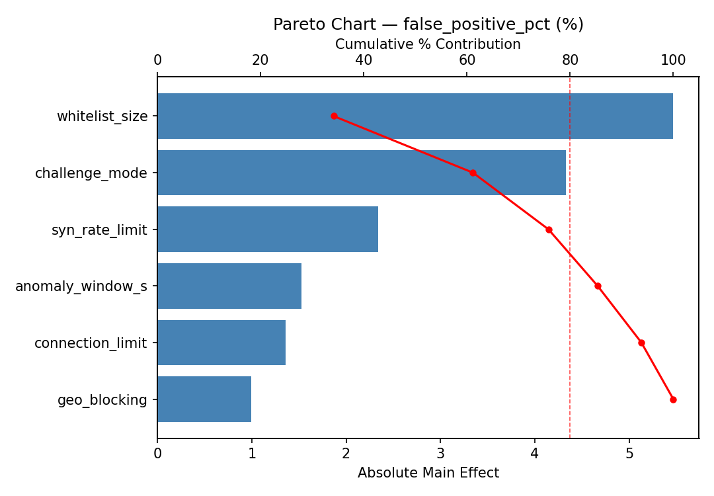
main effects detection rate
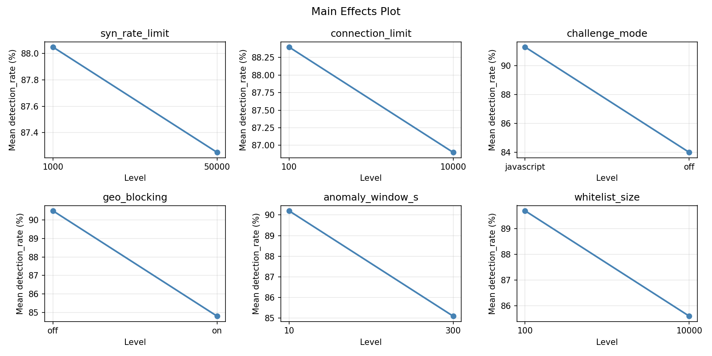
main effects false positive pct
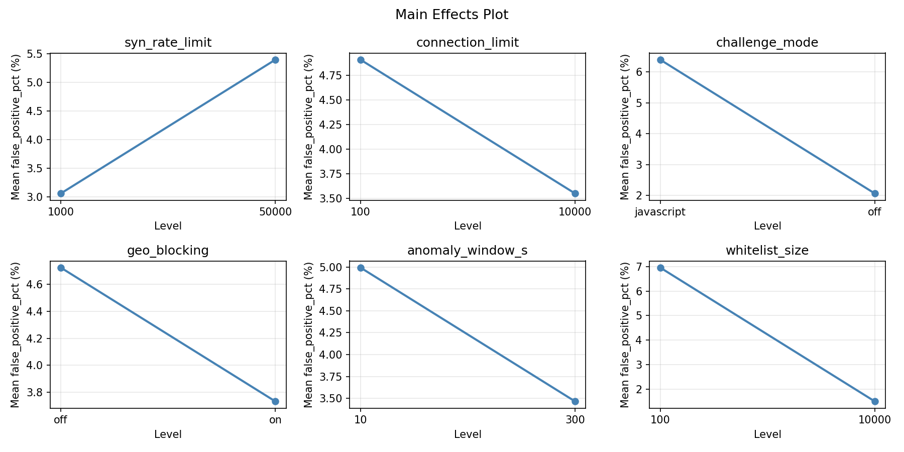
rsm detection rate anomaly window s vs whitelist size
rsm detection rate connection limit vs anomaly window s
rsm detection rate connection limit vs whitelist size
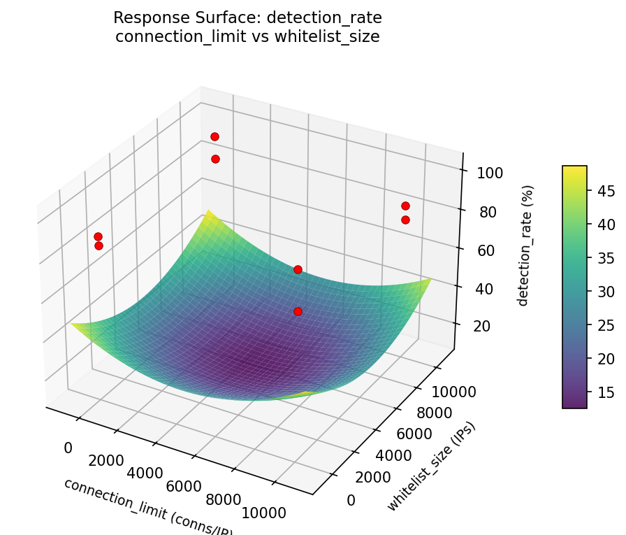
rsm detection rate syn rate limit vs anomaly window s
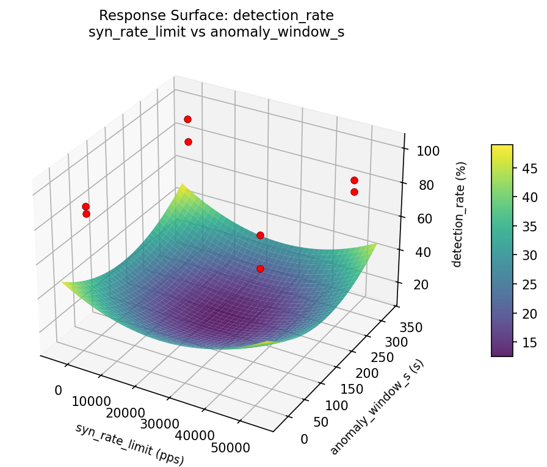
rsm detection rate syn rate limit vs connection limit
rsm detection rate syn rate limit vs whitelist size
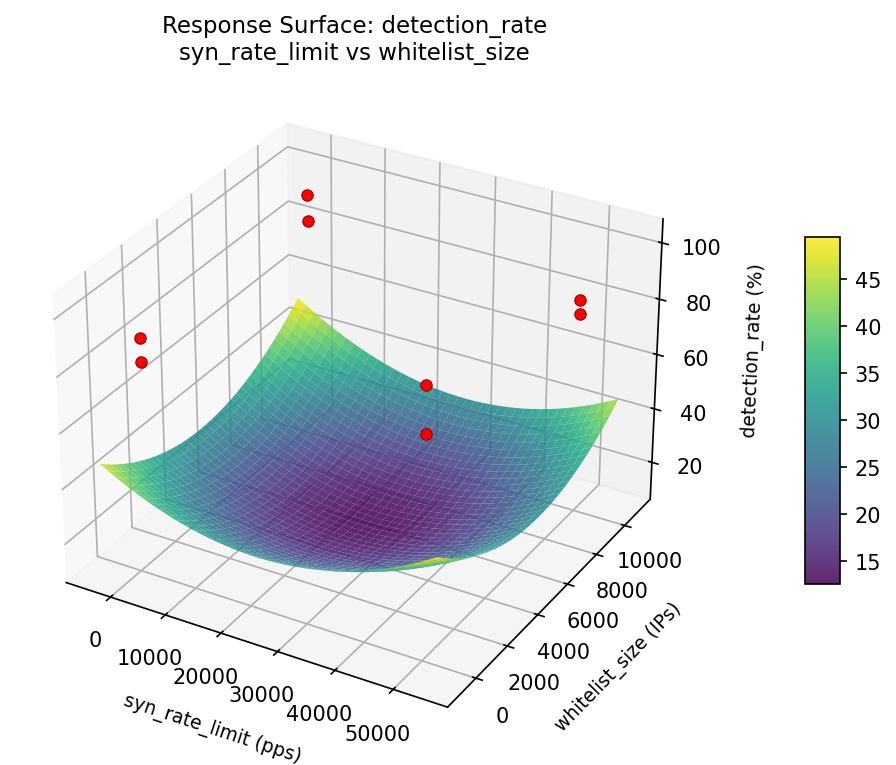
rsm false positive pct anomaly window s vs whitelist size
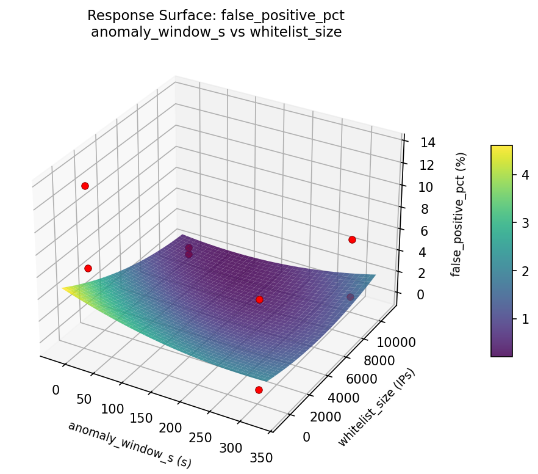
rsm false positive pct connection limit vs anomaly window s
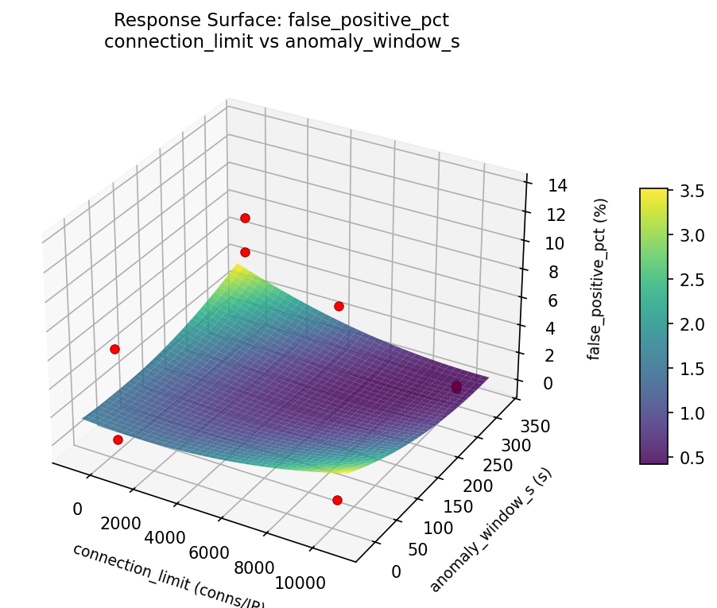
rsm false positive pct connection limit vs whitelist size
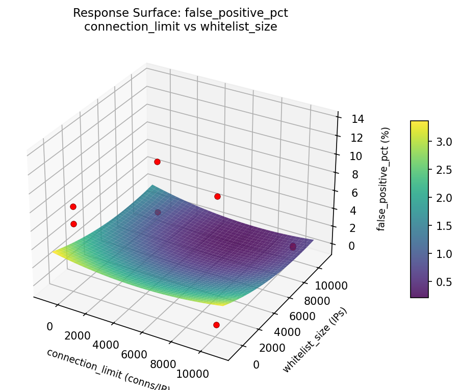
rsm false positive pct syn rate limit vs anomaly window s
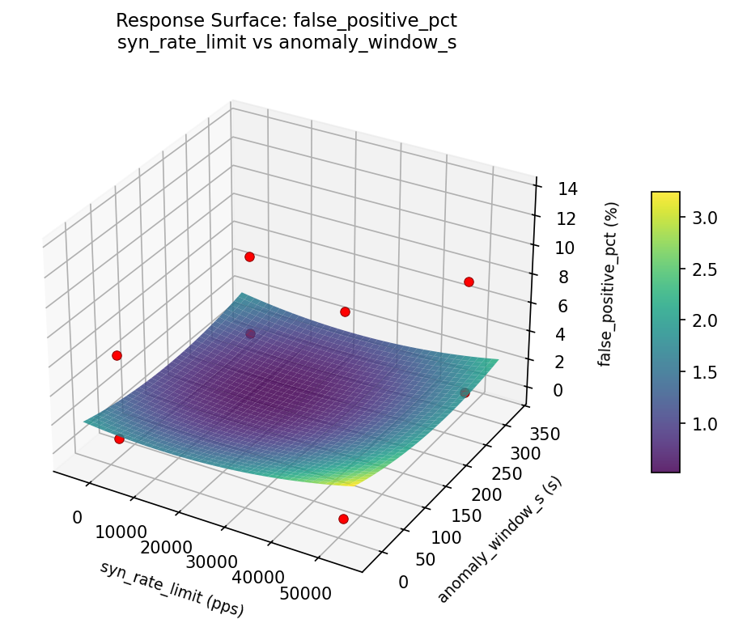
rsm false positive pct syn rate limit vs connection limit
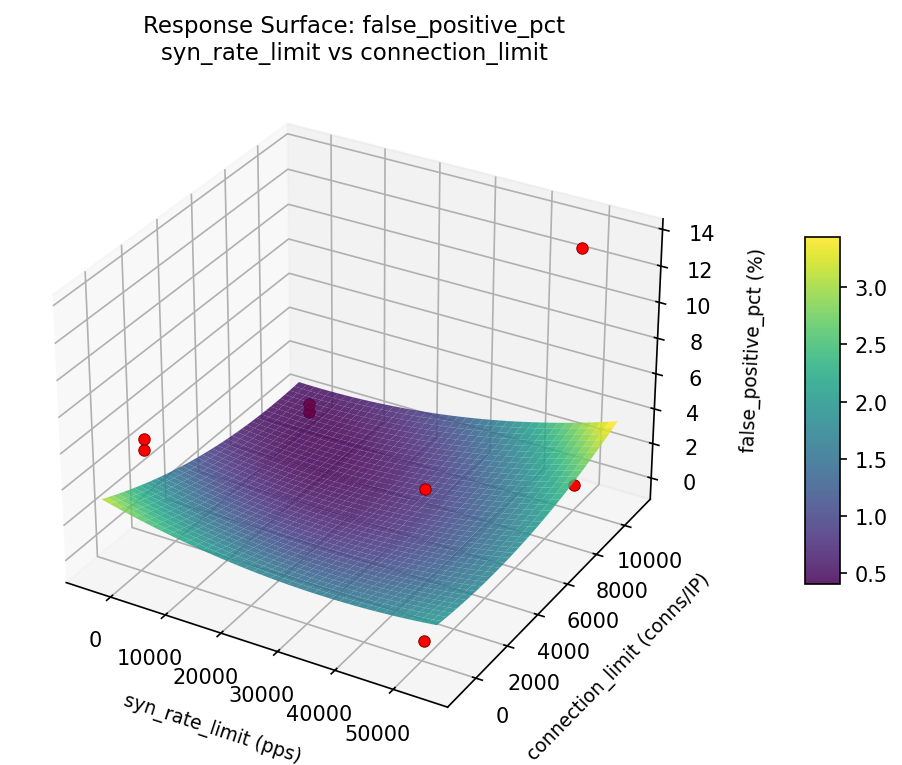
rsm false positive pct syn rate limit vs whitelist size
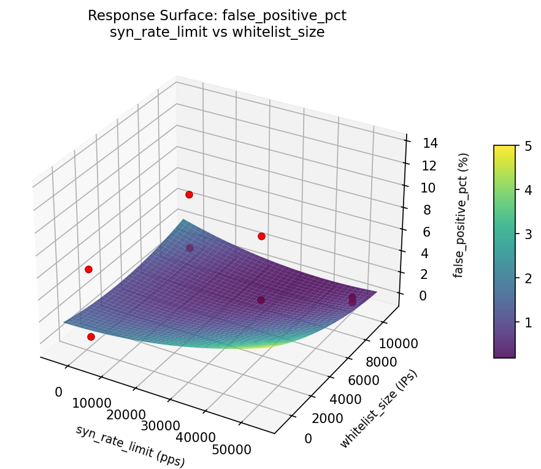